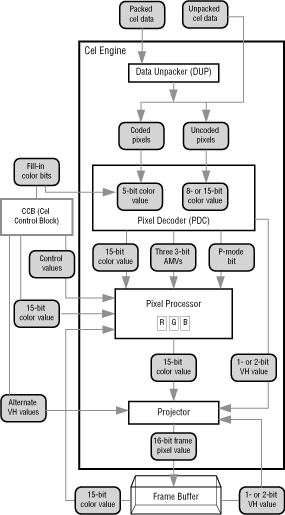
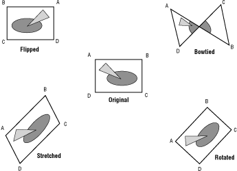

Figure 1: Cel engine components.
Although the cel engine is more complex than the display generator, there are parallels between them. For example:
There are two types of uncoded cels: 16 bits per pixel or 8 bits per pixel. Coded cels can have 16, 8, 6, 4, 2, or 1 bit per pixel. Table 1 shows the different types of coded and uncoded cels and what each offers in its pixels before the pixels enter the pixel lookup table (PLUT).
Table 1: Types of coded and uncoded cels.
---------------------------------------------------------------
Pixel Contents
---------------------------------------------------------------
|Bits/Pixel |Possible |AMV bits |Possible |Possible
| |Colors | |P-mode |VH bits
| | | |bit? |
---------------------------------------------------------------
Uncoded |16 |32,768 |0 |Yes |2
---------------------------------------------------------------
|8 |256 |0 |No |1
---------------------------------------------------------------
Coded |16 |32/32,768|9 |Yes |2
| |* | | |
---------------------------------------------------------------
|8 |32/256* |3 |No |1
---------------------------------------------------------------
|6 |32/64* |0 |Yes |2
---------------------------------------------------------------
|4 |16 |0 |No |1
---------------------------------------------------------------
|2 |4 |0 |No |1
---------------------------------------------------------------
|1 |2 |0 |No |1
---------------------------------------------------------------
If you want lots of color in a cel using simple pixel values, use an uncoded cel. In its 8-bit form an uncoded cel provides 256 different color values; in its full 16-bit form, it offers 32,768 colors. If you are not concerned with lots of colors, you should use a coded cel, which provides 2, 4, 8, 16, or 32 different colors.To include an AMV with each pixel, you should use either 8- or 16-bit coded cels. The AMV scales color values in the pixel processor, so by specifying an AMV for each pixel, you can change color shading pixel by pixel. This added scaling information increases the 32 indexed color values available to give 256 possible colors for the 8-bit coded cel and 16,385 possible colors for the 16-bit coded cel. The extra AMV colors are most often used for shading (darkening or lightening existing colors), so you will probably find uncoded cels best for a wide and distinct choice of colors.
To switch between two sets of pixel-processor operating parameters on a pixel-by-pixel basis using the P-mode bit, you need a 16-bit uncoded cel, 16-bit coded cel, or 6-bit coded cel. The 16-bit uncoded and coded cels provide full 2-bit VH value per pixel for cornerweight positioning. If you use the 6-bit coded cel, the second bit of the VH value comes from the pixel decoder.
Table 2 shows how the bits of each pixel in each type of cel carry information. The color values carried in a coded cel are pointers to 32 different registers in the pixel decoder that contain 16-bit values-the same 16-bit format that goes into frame buffer pixels. You can think of the cel color values as 5-bit color values (even if they only have 1, 2, or 4 bits) because they are always padded out to 5 bits in the decoder before being used as indexes. Those 5-bit color values point to a 15-bit color value plus whatever VH value or P-mode value you want the register to contain-16 bits in all.
Table 2: Information in coded and uncoded cels.
----------------------------------------------------------------
|Coded |Uncoded
----------------------------------------------------------------
Bit # |1-bit |2-bit |4-bit |6-bit |8-bit |16-bit|8-bit |16-bit
----------------------------------------------------------------
15 | | | | | |p/w | |p/w
----------------------------------------------------------------
14 | | | | | |x | |r
----------------------------------------------------------------
13 | | | | | |mr | |r
----------------------------------------------------------------
12 | | | | | |mr | |r
----------------------------------------------------------------
11 | | | | | |mr | |r
----------------------------------------------------------------
10 | | | | | |mg | |r
----------------------------------------------------------------
9 | | | | | |mg | |g
----------------------------------------------------------------
8 | | | | | |mg | |g
----------------------------------------------------------------
7 | | | | |m |mb |r |g
----------------------------------------------------------------
6 | | | | |m |mb |r |g
----------------------------------------------------------------
5 | | | |p/w |m/p/w |mb |r |g
----------------------------------------------------------------
4 | | | |c |c |c |g |b
----------------------------------------------------------------
3 | | |c |c |c |c |g |b
----------------------------------------------------------------
2 | | |c |c |c |c |g |b
----------------------------------------------------------------
1 | |c |c |c |c |c |b |b
----------------------------------------------------------------
0 |c |c |c |c |c |c |b |b/w
----------------------------------------------------------------
The 9-bit AMV available in a 16-bit coded cel specifies a 3-bit red AMV, a 3-bit green AMV, and a 3-bit blue AMV. The 3-bit AMV available in an 8-bit coded cel is replicated to provide the same AMV for red, green, and blue.
Note that the most straightforward type of cel is the uncoded 16-bit cel. Each of its pixels uses the same type of value that is projected into the frame buffer. Use this pixel format if you use a part of the frame buffer as cel source data. For more information about cel pixel contents and how they're interpreted, see The Pixel Decoder (PDC); this section includes diagrams that show how each pixel type is decoded on a bit-by-bit basis.
Each horizontal line of pixel data in packed source data has two parts: a word offset to the next line, and its own data. The line data is run-length encoded into packets. There are four types of packets:
Table 3: Types of Packed Data Packets.
---------------------------------------------------------------
2 Bits of Data Type |6 Bits of Output Pixel|N Bits of Pixel
|Count |Data
---------------------------------------------------------------
PACK_LITERAL |OutputCOUNT (+1) |One or more literal
|literal pixels |pixels
---------------------------------------------------------------
PACK_REPEAT |OutputCOUNT (+1) |One pixel
|copies of the |
|following pixel |
---------------------------------------------------------------
PACK_TRANSPARENT |OutputCount (+1) |-no pixel data-
|transparent pixels |
---------------------------------------------------------------
PAC_EOL |-no output no count |-no pixel data-
|bits- |
---------------------------------------------------------------
Unpacked data is sent directly to the pixel decoder without running through the data unpacker; each pixel is represented by an equal number of bits. Because the pointer-to-cel source data in the CCB can make use of existing pixels in RAM-such as the frame buffer or another cel's source data-several values stored in the preamble specify a rectangular subsection of the full image to use as source data. The width of the rectangle in pixels is set by TLHPCNT (totally literal horizontal pixel count); the height in pixels is set by VCNT (vertical count). WOFFSET is a word offset from the end of one line of data to the beginning of a second line of data. The graphics programming chapters that follow provide more information on these values.
If you have a series of constantly changing images such as character animation or live images coming in from SlipStream, you can set up two different source data locations, write each incoming frame to an alternate location, and have the CCB flip back and forth through them for double-buffered cel animation.
If you'd like to scroll through parts of a larger image, you can use the unpacked source data values described above to look at different areas of pixels in a larger image without changing the pointer. You define the rectangle size once and then change the word offset to point to the top-left corner of the rectangle.
Because some cels use source data from an existing source such as the frame buffer, which typically does not have a preamble, you can include the preamble in the CCB as long as you point to the same source data type each time you feed source data to the cel engine.
Two 32-bit position values set the X and Y coordinates of the cel's origin corner when the cel is projected into the frame buffer. (The origin corner is the corner from which the other corner positions are reckoned.) These values can position the cel in 320-by-240 resolution or 640-by-480 resolution. The low 16 bits are used for 640-by-480 positions; they are set to 0 if positions are reckoned only in 320-by-240 resolution. (You'll find specifics in later graphics programming chapters.)
The other three corners of the cel's projection quadrilateral are specified with values that create X and Y offsets from the origin corner. You can use the offsets to reduce or enlarge the cel's area, to stretch it into odd shapes, to flip it horizontally and vertically, or to bowtie the cel as shown in Figure 2. The origin corner coordinate values (for point A) and the offset corner values (for points B, C, and D) set the shape and size of the cel's projection quadrilateral.

Figure 2: Using offsets to change a cel's area.